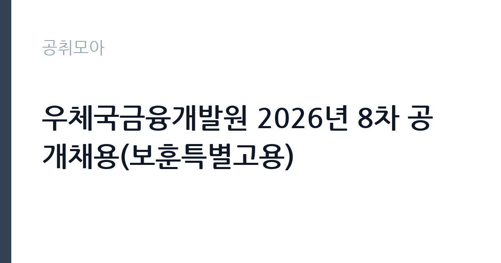

[공공기관] 우체국금융개발원 2026년 8차 공개채용(보훈특별고용)
우체국금융개발원 · 전남 · 마감 2026-10-06 (D-14) · 출처 나라일터

한눈에 보는 모집 조건
| 기관 | 우체국금융개발원 |
|---|---|
| 공고명 | 우체국금융개발원 2026년 8차 공개채용(보훈특별고용) |
| 고용형태 | 정규직 |
| 근무지 | 전남 |
| 게시일 | 2026-09-22 |
| 마감일 | 2026-10-06 (D-14) |
지원자격, 이렇게 읽으세요
- 정규직 2명
- 접수 ~2026-10-06 마감
- 세부 조건은 원문 공고문 확인
지원 자격은 국가유공자 등 예우와 지원에 관한 법률 등에 따른 취업지원대상자로, 보훈관서의 추천과 관련 증빙이 필요합니다. 세부 자격과 제출서류는 나라일터의 원문 공고에서 확인하시기 바랍니다. 정규직 2명 선발이므로 지원 분야의 직무 요건을 꼼꼼히 살펴보시기 바랍니다. 취업지원대상자 증명서 등 보훈 관련 서류를 미리 발급받아 두시기 바랍니다.
이 공고의 포인트
첫 번째 포인트는 보훈특별고용이라는 점입니다. 일반 전형과 분리되어 취업지원대상자만 응시하므로 실질 경쟁률이 낮습니다. 두 번째로 정규직 2명 선발이라 정년이 보장되는 안정적인 자리입니다. 세 번째로 같은 기관의 9차 일반 공채와 함께 진행되어, 보훈 대상자는 본인에게 유리한 전형을 선택할 수 있습니다. 전남 근무가 가능한 보훈 대상자에게 적합한 공고입니다.
전형은 어떻게 진행되나
전형은 서류전형과 면접전형으로 진행되는 것이 일반적이며, 세부 일정은 원문 공고에서 확인하시기 바랍니다. 보훈특별고용은 보훈관서 추천 절차가 포함될 수 있으니 일정을 미리 확인하시기 바랍니다. 접수 기간이 약 2주로 여유가 있으나, 보훈 관련 서류 발급에 시간이 걸릴 수 있어 서둘러 준비하시기 바랍니다. 서류전형에서는 지원서와 자기소개서의 완성도, 직무 적합성을 중심으로 평가합니다. 면접에서는 지원 동기와 조직 적응력을 함께 살펴봅니다.
이런 분께 추천해요
- 취업지원대상자로 금융 공공기관 정규직을 목표로 하시는 분
- 전남 근무가 가능하신 분
- 보훈특별고용의 기회를 활용해 공직에 진출하고 싶으신 분
지원 전 체크리스트
- 취업지원대상자 해당 여부와 증빙서류를 확인했습니다
- 보훈관서 추천 절차와 일정을 확인했습니다
- 지원 분야의 직무 요건을 원문에서 확인했습니다
- 원문 공고문의 접수방법과 마감일 10월 6일을 확인했습니다
모집 일정과 제출 타이밍
마감일은 2026년 10월 6일입니다. 보훈관서 추천이 필요한 경우 추천 절차에 소요되는 시간을 감안해 미리 움직이시기 바랍니다. 서류 합격자 발표와 면접 일정은 원문과 기관 안내에 따르시기 바랍니다.
직무 이해하기: 공공기관
우체국금융개발원 소속으로 우체국금융 사업의 지원 업무를 맡습니다. 금융상품 운영 지원과 고객 서비스, 전산 지원 등의 업무를 수행합니다. 전남에서 근무하며, 공공기관 카테고리의 정규직 공고입니다. 개발원은 우체국예금과 우체국보험의 상품 운영 지원, 전산 시스템 관리, 고객 상담 지원 등의 업무를 수행합니다. 전남 지역의 우체국금융 지원 거점에서 근무하며 공공금융의 안정성을 뒷받침합니다.
자기소개서 작성 팁
자기소개서에서는 지원 분야의 실무 역량과 우체국금융에 대한 관심을 구체적으로 기술하시기 바랍니다. 관련 경험과 자격증을 수치와 함께 제시하시기 바랍니다. 보훈 대상자로서의 자긍심과 공공기관 근무자로서의 책임감을 진정성 있게 서술하시기 바랍니다. 우체국금융의 공적 역할에 대한 이해를 보여주고, 본인의 경험이 해당 직무에 어떻게 기여할 수 있을지 구체적으로 연결하시기 바랍니다.
면접 준비 포인트
면접에서는 지원 동기와 직무 이해를 질문받을 가능성이 큽니다. 우체국금융의 역할을 미리 살펴보고 본인의 생각을 정리해 두시기 바랍니다. 차분하고 성실한 태도로 임하시기 바랍니다.
급여·근무조건 읽는 법
보수 수준은 원문 공고문에서 확인하셔야 합니다. 개발원 정규직의 급여는 기관 보수규정에 따른 직급·호봉 테이블이 적용됩니다. 알리오 경영공시에서 기관의 평균보수를 참고하실 수는 있으나, 개인의 초임과는 차이가 있으므로 원문을 기준으로 판단하시기 바랍니다.
자주 묻는 질문
- 보훈특별고용은 누가 지원할 수 있습니까
국가유공자 등 보훈 관계법률에 따른 취업지원대상자가 지원하실 수 있습니다. 세부 요건과 증빙서류는 원문에서 확인하시기 바랍니다. - 모집인원이 몇 명입니까
정규직 2명을 선발합니다. 지원 분야의 세부 내용은 원문 공고문에서 확인하시기 바랍니다. - 근무지는 어디입니까
전남에서 근무하게 됩니다. 세부 근무 부서는 임용 시 안내받으시게 됩니다.
함께 보면 좋은 공고
[공공기관] 한국연구재단 PM(기초연구본부장) 초빙 재공고 — 마감 2026-10-13[공공기관] 칠곡경북대학교병원 2026년 9월 5차 임시직원 채용공고(물리치료사, 간호사, 주차, 조경관리) — 마감 2026-09-28[공공기관] [KDI국제정책대학원] 2026년 제10차 인턴직원 채용(경영기획) — 마감 2026-10-08출처: 나라일터 공개정보를 바탕으로 공취모아가 정리한 안내글입니다. 모집 조건·일정은 변경될 수 있으니 지원 전 반드시 원문 공고문을 확인하세요. 본 글은 정보 제공용이며 합격을 보장하지 않습니다.